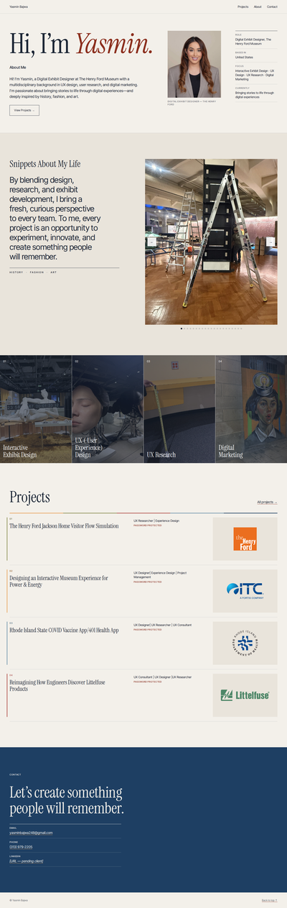
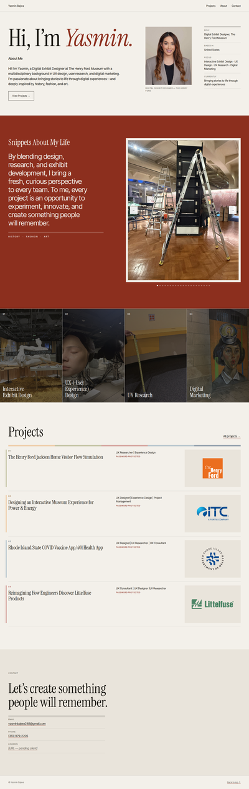
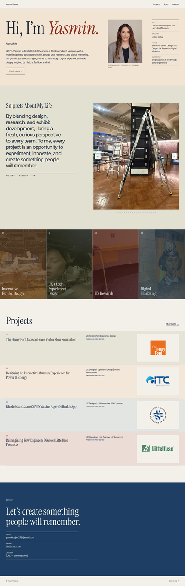

Same layout, same copy, same photographs. Each direction gives cream, wine and The Henry Ford's colours a different job, so Yasmin can choose a mood, not just a swatch. Live in the prototype: the theme switcher, top-right (Archive · Salon · Campus).
The museum label. Quiet paper and navy type; the card's colours only tell you which project you're in. The work carries the colour.
paper 62% · paper 2 12% · navy ink 16% · navy band 7% · wine 2% · venue colours 1%
#F3F0EApage#E9E4DBSnippets, Reflection, tiles#1C2635all type#1E3F63Contact band#8C2F1E“Yasmin.”, links, Enter
Yasmin's own room. Wine is her voice: it fills the sections that are about her (Snippets, every Reflection, the door to her work). Everything else stays paper.
paper 58% · paper 2 10% · warm ink 14% · wine 17% · venue colours 1%
#F3F0EApage#E9E4DBContact#16140Fall type#8C2F1ESnippets, Reflection, lock, “Yasmin.”#F3F0EAtext on wine
The business card as a map. Each section takes a soft tint of a venue colour in the card's order, and each project sits on its own venue tint. Colourful, but never loud: tints, not fills.
paper 40% · venue tints 34% · navy ink 14% · navy band 8% · venue colours 3% · wine 1%
#F1E4D3Hero#E2E0D1Snippets#E3E5E2one per project#1E3F63Contact, links, Enter#8C2F1E“Yasmin.” only